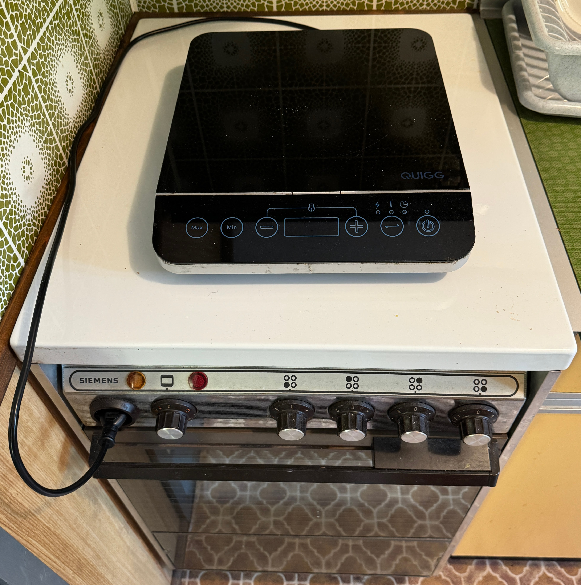
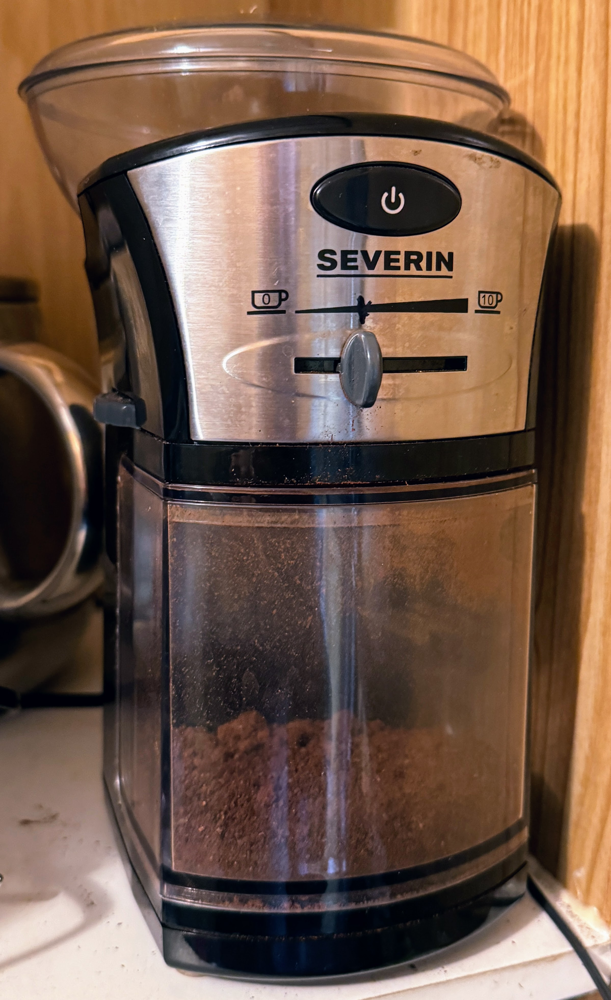
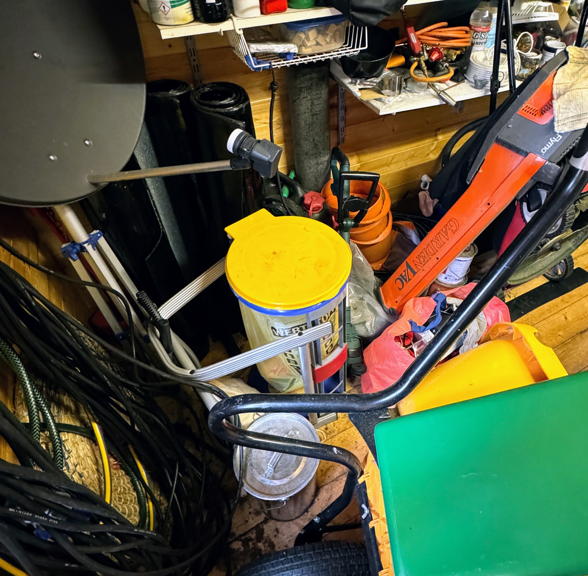
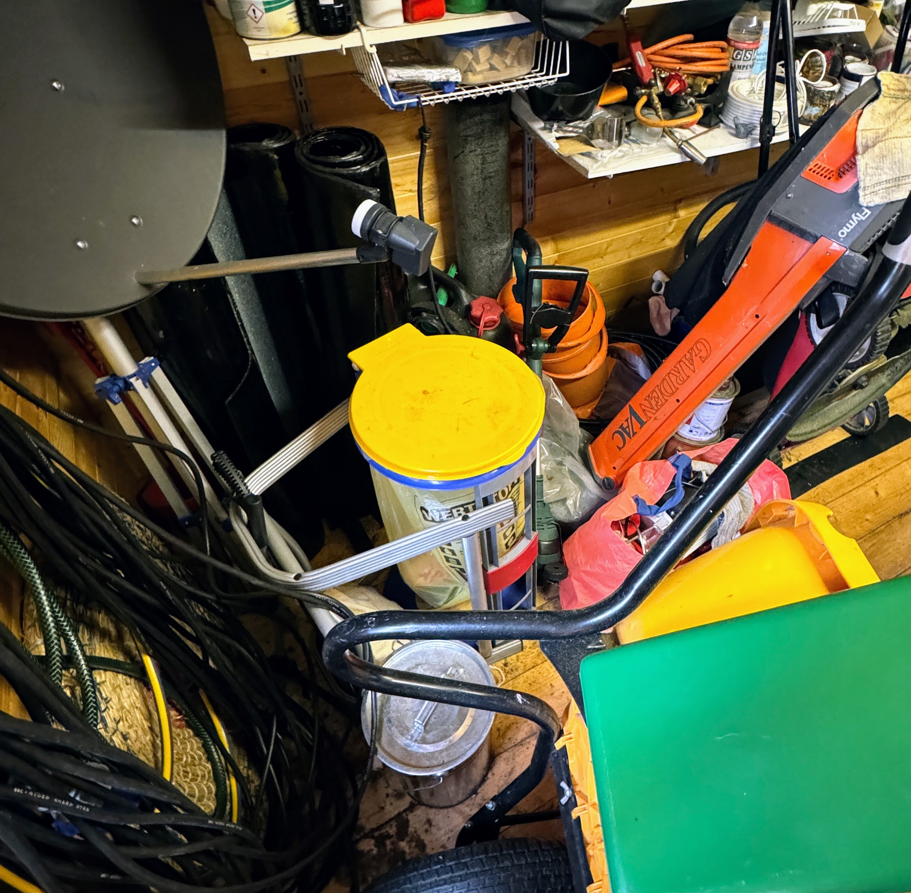

Küche
Das Wasser hat Trinkwasserqualität.
Herd
Der Herd und Backofen sind in Ordnung. Die Induktionsplatte haben wir nur zusätlich aufgestellt.

Kaffee
Der Kaffee kann im FrenshPress System aus ganzen Bohnen hergestellt werden.
Dazu gibt es eine Kaffeemühle: Der schwarze Strich ist die Einstellung für die kleine Press Kaffeekanne.

Das gebrauchte zusammengepresste Kaffeemehl aus der Kanne bitte nicht in den Abfluss, sondern mit etwas heißem Wasser schwenken und aus dem Küchenfenster schütten.
Unterhaltung
Das Radio kann DAB, Spotify, Bluetooth u.s.w.
Entsorgung
Die kleine graue Plastikschale an der Spüle dient zum Sammeln des Biomülls. Sie kann in den Komposter hinten rechts auf dem Grundstück entleert werden.

Im Ascheimer finden sich Bereiche für Restmüll (braun) und grüner Punkt (grün).
Beutel für den Restmüll sind in dem Schrank über dem Herd.
Die "Wertstoffe" des grünen Punkt bitte abspülen (damit es keine Tiere anlockt) und in die grüne Hälfte (ohne Beutel). Entleeren im Schuppen in den Sackhalter mit dem gelben Deckel. Den Sack nehmen wir, wenn voll, mit.
 
